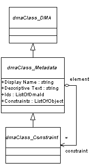

These pages provide a sketch of the overall architecture for CSDocs, the extensions to the DMA 1.0 model for Compound/Structured Documents.
This is work in progress. It is organized in this fashion to have more flexibility in annotation, cross linking, and other operations while the architectural sketch is being drafted, explored, validated, and revised. The HTML is used at a level that is easily incorporated back into one or more DMA Architecture Change Proposals later in the process.
This is an intermediate top-level piece to the sketch: a sketch-of-the-sketch. This more-informal presentation is circulated and posted in order to obtain early review and give all Technical Committee and DMA participants a sense of the current direction. The key ideas are presented and developed in the Architectural Approach section. This is the roadmap being followed. Later sections expand on the roadmap and provide current information, location of specification drafts, and so on. The What's New? section indicates where the authors and subcommittee are concentrating in current work on the proposal. The About This Material section provides information on how to obtain the latest information on the sketch and other CSDocs activities.
The CSDocs Foundation draft proposal is now available in HTML and Word format.
This is sketch version 1.8 created on 2001-05-03-17:50 -0700 (pdt)
Content
CSDocs Modularity
CSDocs Foundation
Advanced Features
Postponed CSDocs Extensions
Basic Compound/Structured Document Model
CSRoot Renditions of Compound/Structured Documents
Unique Identifiability of Persistent DMA Elements
Specifying the Content Dependencies of Compound/Structured Documents
Direct Navigation to CSDocs Elements
Virtual Elements
Access to DMA Elements by URL
Metadata for Description of Policy Mechanisms
Specifying Referential-Integrity Strength
Following New Versions with Relationships
- InstanceId Optionally-Supported on dmaClass_DMA objects: Position statement and discussion
- InstanceId has DmaId values: position statement and discussion
- CSDocs Foundation Proposal: initial draft (Microsoft Word 97)
- CSDocs Information on Existing Systems: initial draft (Microsoft Word 97)
- The sketch has been cleaned up editorially and there is more-careful use of UML in the figures.
Following the June 15-17, 1999 DMA Technical Committee meeting in Costa Mesa, California, it was agreed to pursue the development of the proposal for the CSDocs Foundation. On the June 29, 1999 CSDocs subcommittee conference call, there were three topics (in two areas) to be deepened under the Foundation:
- How the level of abstraction of a CSRoot DocVersion is determined by a CSRoot-aware application,
A brief position statement on CSRoot Renditions is included in the section on CSRoot Renditions, below.- Where the InstanceId property is introduced into the DMA class hierarchy.
An expanded position statement on InstanceId generally, and location of the property generally is now available here.- How InstanceId properties are formed, providing a basis for referring to specific elements within an independently-persistent DMA object.
An expanded position statement and discussion of the formation of InstanceId values is now available here.The foundation proposal, promised for July 13 was not available at that time. Discussion continued and the first draft of a complete foundation proposal was made available on July 28.
While the CSDocs Foundation is being reviewed and advanced toward recommendation by the CSDocs subcommittee for acceptance by the DMA Technical Committee, discussion and proposal of Advanced Features will begin in parallel, via E-mail.
You are viewing a copy of the CSDocs Architecture Sketch. It is not necessarily the latest version.
To obtain the latest version, look in
The InfoNuovo.com site DMA Clearinghouse location http://www.infonuovo.com/dma/csdocs/sketch. A recent version of the material is at that location in the form of viewable web pages.
To obtain the ZIP file of all materials for this edition, click here.
To obtain the Microsoft PowerPoint slides of the CSDocs working presentation to the June 15-17, 1999, DMA Technical Committee meeting, click here.
To obtain the CSDocs Foundation Proposal (Microsoft Word 97), click here.
It is intended that the CSDocs architecture be worked through and approved in layers. The first level is for the foundation. Then there is an opportunity to propose advanced extensions for a number of topics. Some developers require some or all of the advanced extensions to deliver their complete compound-structured document models. Other developers, and many applications, will operate at the simpler foundation level, with more enforcement of the compounding rules by application agreement instead of DocSpace object-model and policy mechanisms.
There are expected to be several architecture-change proposals as part of achieving the CSDocs extensions. The foundation will be produced in a single proposal, followed by supplements added to the foundation.
The table below shows the general modularization and progression of CSDocs features.
Level CSDocs Extensions Generic DMA Extensions Basic Compound/Structured Document Model - Overall Renditions of Compound/Structured Documents - Specifying the Content Dependencies of Compound/Structured Documents Unique Identifiability of Persistent DMA Elements Direct Navigation to CSDocs Elements Direct Reference and Navigation to Persistent DMA Elements* Virtual Components in CSDocs DMA Extensions for Virtual Elements Miscellaneous Access to DMA Elements by URL Metadata for Description of Policy Mechanisms Specifying Referential-Integrity Strength Following New Versions of Components Following New Versions with Relationships*
* these two topics are not expanded upon in this sketch. The potential generalization beyond the CSDocs-specific cases is straightforward.
The first three topics are candidates for inclusion into a single CSDocs foundation proposal:
- The Basic Compound Document Model establishes a new Relationship class that represents the dependencies of root documents on component documents. This is used for all compound-document dependencies under CSDocs. The nomenclature around roots and components, and structures of them, is defined to be application neutral.
- The Overall Renditions approach addresses the way that renditions, if any, of a root document are related to the overall content of the compound document that is represented.
- The relationship between a root and component is often a relationship between an element of the root's content structure (rendition or content element) and an element of the component's content structure. The third foundational extension augments the basic model so that the particular internal elements involved in the relationship are explicitly identifiable.
The advanced extensions for CSDocs are often best accomplished by introducing generic extensions to DMA.
The advanced-level extensions are:
There are also potential interactions with CBSearch that are not addressed in the current sketch.
There are also potentially-complex interactions with extensions of the DMA 1.0 Versioning model to support complex configurations (especially branching).
Features of the current sketch might also be postponed to accelerate initial trial use and agreement on the basic features of DMA CSDocs extensions.
The basic compound document model establishes how the constituents of a compound document can be represented in structures of separate DMA objects. The interdependencies among the objects are established with DMA relationship objects:
Figure 1 UML scheme for Basic Compound
Documents (a) with typical instance (b)
[click for Visio version]
1. The CSDocs extension depends on a new optionally-supported subclass of the DMA 1.0 dmaClass_Relationship class. This is the dmaClass_CSRelationship class and its subclasses.
2. The reflective property of a dmaClass_CSRelationship dmaProp_Tail property is always a dmaProp_CSComponents enumeration property.
- Any DMA object that has a dmaProp_CSComponents property is usable as a CSRoot in a CSDocs compound document structure.
- We call that object a CSRoot object. It can be at the Tail of one or more CSRelationships.
3. The reflective property of a dmaClass_CSRelationship dmaProp_Head property is always a dmaProp_CSRoots enumeration property.
- Any DMA object that has a dmaProp_CSRoots property is usable as a CSComponent of a CSDocs compound document structure.
- We call that object a CSComponent object. It can be at the Head of one or more CSRelationships.
In the basic CSDocs model, an object can be both a CSRoot and a CSComponent. A DocSpace may support a variety of different families of CSDocs structures by use of subclassing and relationship restrictions.
The basic compound document model does not establish anything about the application of the CSDocs structures. Anything about what a CSDocs structure is for and how one employs the DocVersions that comprise it depends on application-agreement, published profiles, and other practices around use of the basic compound document model.
The CSRoot Renditions principles are the first that ground CSDocs for specific, practical application: Determining the relationship between the semantics of a CSRoot and of any renditions it has.
This portion of the foundation represents the CSDocs response to the following questions:
- If a CSRoot DocVersion has renditions, what is their specific role, if any, in the CSDocs model?
- What restrictions does this place on the flexibility for implementing different families of useful CSDocs structures?
Here is the current position on renditions of CSRoot DocVersions. It is reflected in the initial CSDocs Foundation proposal. Further discussion will be held to establish the final position included in the CSDocs Foundation proposal.
- The renditions of a CSRoot document, as for any DocVersion, are at the same level of abstraction. Either all of the renditions are for the overall compound document or none of them are.
- The CSRoot Style property is necessary to specify when the CSRoot renditions are not complete renditions of the overall document that the CSRoot stands at the root of.
- A CSRoot can be a CSComponent. It can contribute its elements as components of another CSRoot the same as any CSComponent DocVersion (see Specifying Content Dependencies, below).
The extensions that CSDocs depends on to accomplish identification of and navigation to dependently-persistent components is of value in all areas of DMA 1.0. Because of that, it is recommended that a general proposal also be produced. The related CSDocs extension then specifies precisely how those extensions are exploited for CSDocs.
This is a generic extension to DMA 1.0:
- It adds the optionally-supported dmaProp_InstanceId property to dmaClass_DMA.
- dmaProp_InstanceId is an implementation-optional, system-derived, read-only, and value-not-required property.
- The value of dmaProp_InstanceId is of type DmaId.
- The property is meaningful only on persistent DMA objects. On a DMA object instance for which there is (presently) no corresponding persistent element, any dmaProp_InstanceId property must have no value.
- If the property is supported on a persistent DMA object, it will have a unique value from the time the persistent form is created until that particular persistent form no longer exists. The value is never reused for another object.
The CSDocs subcommittee is currently discussing position elements (1) and (3). These are discussed and explored further in separate position statements on the InstanceId.
This property is a valuable adjunct in query and in the unique identification of elements of independently-persistent objects. The property permits globally-unique, unambiguous identification regardless of the context of an element and does not depend on applications to provide supplemental properties or introduce other practices to allow elements to be uniquely identified.
This property is valuable in the property list of an independently-persistent object also. The dmaProp_OIID property is a string and it includes location information and a DocSpace-specific object identifier (the ObjectId field) as part of that URL-format string. When an independently-persistent object has an Instance Id, it is appropriate for this to be encoded in the OIID as the value of either the IdmaOIID::GetObjectIdText method or the IdmaOIID::GetGUID method.
The current methods for accessing objects by their dmaProp_OIID property values are confined to independently-persistent objects. It would be inconsistent and disruptive to have dependently-persistent elements suddenly be returned by such an operation performed by a DMA 1.0 client. To allow direct access to a dependently-persistent element that is uniquely identifiable requires further extension to the DMA 1.0 model.
DMA relationship Head and Tail properties can only have independently-persistent objects as their values. In general, all navigation from one independent object to another is to an independently-persistent object and not a dependently-persistent element of any object. For compound documents and other applications, it is useful to supplement navigational properties to identify specific elements as the object of navigation.
The idea is that the property for navigating to the independently-persistent object be supplemented by additional properties to make an "extended reference" that provide a unique path to a desired internal element. The scheme involves general principles requiring that an unambiguous path to the element be determined.
In many cases, as in CSDocs, a specific path is employed. If a generic path to an arbitrary element of a document is needed, it can be satisfied by a dmaClass_ListOfId valued property that has a sequence of alternating property identifications and dmaProp_InstanceId values: propid[1], instid[1], propid[2], instid[2], ..., propid[n], instid[n]. (This "element path" could even thread through more than one object to its target.)
The next level of specialization extends CSRelationship subclasses to provide more information about the way in which a root document depends on its component documents.
The capabilities for specifying dependently-persistent components do not alter the fundamental characteristics of the DMA relationship object model. Relationships are always between independently-persistent objects. This extension allows the relationship to also identify the specific elements that participate in the relationship when it is meaningful to do so.
The extension has two parts:
- Elements of CSDocs DocVersions have optional properties that give them a unique identification. This allows another object to carry DmaId-valued properties for locating a specific, unique element within a CSRoot or CSComponent object.
- Additional properties are provided on a CSRelationship to qualify the dmaProp_Head and dmaProp_Tail. These are used to determine which element of the CSRoot and CSComponent are involved in the particular compound dependency relationship that a CSRelationship object represents.
The specialization of CSRelationship to have accurate identification of elements is as follows.
- The CSRelationship class description has optional-supported additional properties: the dmaProp_HeadRenditionId property and the dmaProp_HeadContentElementId property.
The rules of interpretation for these properties are as follows:
- If there is no dmaProp_HeadRenditionId property, then the component is the object supplied by dmaProp_Head. Any further specialization depends on external agreements, application conventions, and the profile of the CSDocs structure being used.
- If there is a dmaProp_HeadRenditionId property, and it has a value, then the relationship head is refined to the dmaProp_Renditions list element that has the matching dmaProp_InstanceId property value. If it has no value, then the component is the object supplied by dmaProp_Head and there is no specific rendition that participates in the relationship. It must be assumed that the entire CSComponent is relevant.
- If there is a dmaProp_HeadContentElementId property, and it has a value, then the relationship head is further refined to the dmaProp_ContentElements list element (of the established Rendition) that has the matching dmaProp_InstanceId property value. The dmaProp_HeadRenditionId property must be implemented if the dmaProp_HeadContentElementId property is implemented. If the dmaProp_HeadRenditionId property has a value and the dmaProp_HeadContentElementId property does not, then there is no specific content element that participates in the relationship. It must be assumed that the entire Rendition is relevant.
The additional properties dmaProp_TailRenditionId and dmaProp_TailContentElementId are introduced and used in the same way to provide refined identification of that part of a CSRoot that depends on the component identified in the particular relationship object.
[It is not expected that every case of dependency is meaningful. That is, having a content element at the tail and a rendition at the head might not make sense. On the other hand, the scheme is perfectly general and users and systems can implement the cases that matter for the CSDocs structures being used. The CSDocs model does not say what the CSRelationship dependency is, it says that there is one. Subclassing and additional edge data can be used to deal with specialized cases to the degree that is essential to a particular kind of CSDocs structure. -- dh:99-05-25]
With the CSDocs provisions for identifying specific elements, the next level of extensions involves direct navigation to an element as the value of an object-valued property. That is, a navigational property can be a direct "short-cut" that allows direct navigation to the target element.
The ordinary way to navigate from some object to an identified element is as follows:
- Traverse through the object-valued property (e.g., dmaProp_Head) that locates the independently-persistent object having the desired element.
- Use the path of dmaProp_InstanceId property values in any supplemental properties to navigate to the precise element.
For example, to find a CSComponent element by traversal from a CSRelationship object, the operations are as follows:
- Get the CSComponent DocVersion by traversing the dmaProp_Head property of the CSRelationship object.
- If the CSRelationship object has a dmaProp_HeadRenditionId property with a value, traverse to the CSComponent DocVersion's dmaProp_Renditions list-valued property. Search the list and stop on the Rendition object whose dmaProp_InstanceId property value matches that given by the dmaProp_HeadRenditionId property value.
- If the CSRelationship object also has a dmaProp_HeadContentElementId property with a value, use the Rendition object of (b) and traverse to its dmaProp_ContentElements list-valued property. Walk through the list and stop on the Content Element whose dmaProp_InstanceId property matches that given by the dmaProp_HeadContentElementId property value.
Direct navigation has the exact same semantics. The necessary InstanceId values must be provided in the CSRelationship object. There are also optional direct-navigation properties, the dmaProp_HeadElement object-valued property and the dmaProp_TailElement object-valued property.
Direct-navigation properties have no reflective property. The object-valued property in (1) and the individual path property elements in (2) may also be made system derived and read-only if direct navigation is the required way to set up the path to the element.
A direct navigation is created by inserting the target element into the element property using IdmaEditProperties::PutPropValObjectBy... in the usual way. When the CSRelationship object is made persistent, the proper values are "snapped" into the object-valued property for the independently-persistent object having the element and for the InstanceId-valued properties that represent the path to the element.
When an object having such a reference is used, the identifying elements are enough to allow the element to be found by the traversal method (1-2) above. Alternatively, the dmaProp_...Element property can be traversed directly and an element will be provided by direct navigation as if the traversal had been performed silently and only the ultimate element then returned. The result is exactly the same.
[Side note: When direct navigation is supported, the properties for navigation to the independently-persistent object (e.g., dmaProp_Head) and for direct navigation to the element (e.g., dmaProp_HeadElement), will appear to be bound simultaneously, including the path from the independently-persistent object to the intended element. In the case when it is the CSComponent DocVersion that is the target (with no rendition or content element identified), the two navigations are the same and bound to the same instance. --dh:99-06-02]
To introduce direct navigation in the CSRelationship model, the basic extension involves adding optionally-implemented properties dmaProp_HeadElement and dmaProp_TailElement.
Any CSRelationship subclass that implements dmaProp_HeadElement will usually have dmaProp_Head, dmaProp_HeadRenditionId and (if implemented) dmaProp_HeadContentElementId as system-derived and read-only. Any CSRelationship subclass that implements dmaProp_TailElement will have dmaProp_Tail, dmaProp_TailRenditionId and (if implemented) dmaProp_ContentElementId as system derived and read-only.
Further streamlining of operation is supported in query if the dmaProp_HeadElement and dmaProp_TailElement properties are selectable and are usable in query expressions (e.g., are properties usable in join relationships).
Virtual elements are an extension to DMA for having elements that are derived from other, shared elements. The relationship between the virtual element and the shared element on which it is based is established with dmaClass_Relationship subclasses. Access to the virtual element automatically yields the information of the shared element, as if the shared element were accessed instead.
Virtual elements have many valuable applications independent of CSDocs. They provide for sharing of the same content material among different DocVersions, including between versions of the same or different document.
In addition to the use of the unique identification model and related extensions for identification and navigation of elements, a new optional interface is added to dmaClass_DMA (to have it available above all persistent elements that might be virtualized).
This interface, IdmaVirtualElement, works like IdmaVersionable. The method IdmaVirtualElement::SetDerivation takes a dmaClass_Relationship subclass object as its operand, and it establishes the head of that relationship as the source for the implementation of the virtually-derived element. The current element (the one with the IdmaVirtualElement interface) is made a virtual element when it is successfully made persistent.
A simple kind of virtual derivation is when the derivation provides the head object as the literal implementation of the virtual element with at-most trivial embellishments.
A CSRelationship can be a virtual-derivation relationship. All that is required is for the appropriate elements of the CSRoot to offer IdmaVirtualElement interfaces and for there to be a CSRelationship subclass that is compatible for use in holding the virtual-derivation relationship.
There are a number of additional extensions that are important for advanced CSDocs features and for the satisfaction of all of the agreed CSDocs requirements:
There is a requirement to also provide for direct access to elements with DMA objects by URL. This becomes possible as a consequence of unique identifiability, the provision of paths to components, and the ability to navigate directly to elements.
There is also supplemental machinery required in order to establish an appropriate URL protocol (part of dma://) or protocols (part of http:// as well, etc.)
The exploration of CSDocs has exposed a number of places where it is important to explicitly add policy information about DMA classes and properties.
For example, it is important to be able to determine whether an object-valued property requires an independently-persistent object for its value or whether it treats all supplied values as sources for creation of a dependently-persistent value. There are other places where supplemental description is needed to support users in understanding the conditions to be satisfied when creating a new object of some class, when supplying values for properties, and so on.
This extension involves addition of a new metadata subclass for identified and registerable policies, using aliasable metadata identifications. The properties of the object employ at least the standard display name and description capabilities to provide human usable explanatory material and supplemental documentation.
The rules for these properties in creation of merged scopes are the same as if these properties are unknown user-defined extensions of metadata.

Figure 2. Introduction of Constraint Metadata Class
Constraint metadata are added as the value of dmaProp_Constraints list-of-object properties of class and property descriptions. Typical usage of constraints is to specify a policy that is enforced on the usage of a class or on the value of a property. For example,
that an object-valued property must be supplied with an independently-persistent object for its value
that an object-valued property will make its value dependently persistent if the object having the property is made persistent
that all instances of a class are system-derived and read-only and can not be independently created under a given metadata space
that persisting an instance of a particular dmaClass_Container subclass will result in an initial container and it will be listed immediately on the dmaProp_InitialContainers list of all subsequent connections to the DocSpace
that deletion of an instance of a particular dmaClass_DocVersion subclass will result in deletion of every containment relationship object of which the instance is a head object, provided that the requester is permitted to have deleted them all individually
that instances of a particular dmaClass_VersionSeries subclass for which dmaProp_IsPrimarySeries is set cannot be deleted
There will be a number of well-known constraints that are registered along with the introduction of constraint metadata.
The variety of ways that CSDocs structures are used increases the importance of addressing ways to control the strength of the CSRelationship and how insertion, replacement, and deletion of the CSRelationship, of the CSRoot, and of the CSComponent are handled.
This is a valuable place for policy metadata also, when the DocSpace has a fixed, non-specifiable policy concerning insertion, deletion, and replacement of CSRelationship objects and the involved CSRoot and CSComponent.
In addition to being able to tell what the insertion, deletion, and replacement/update policies are for a CSRelationship object, it is desirable to provide ways for a requester to specify what the rules are to be for a given CSRelationship. This might be through properties specified on the CSRelationship or by some other means, such as offering different subclasses for the different supported constraints.
There is a general requirement in compound/structured documents, and in other use of versioned objects (e.g., container elements), to have a form of relationship that follows objects in a changing version series. A Head or Tail property will automatically leap to a new current version of the Version Series being tracked, for example.
This mechanism allows an application to publish or manage a compound document that is simply the latest view formed with all of the latest versions of the components. This is expected to be in addition to the simple form of CSDocs versions that always have specific components for a specific root, regardless of how any of them occur as versions under one or more configuration histories.
created 1999-04-30-14:09 -0700 (pdt) by Dennis E. Hamilton
$$Author: Orcmid $
$$Date: 01-05-03 17:59 $
$$Revision: 27 $